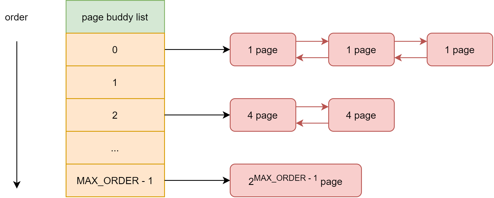

物理内存分配/释放管理之伙伴算法(buddy)
一. 描述
内存是操作系统运行的根基，处理器从内存中取出指令来执行，在进入操作系统之前，一般会有引导器 bootloader 把内核加载到内核中，然后跳转进去执行。
这样的话，内核也就占用了一部分的内存，那么我们应该去管理哪部分内存呢？
我们需要管理的物理内存是除了保留地址和操作系统占用以外的空闲的内存，这部分内存就是需要在操作系统运行的过程中进行静态/动态分配的内存。
nxos 在 qemu 的 riscv64 虚拟平台中，内存布局如下:
/**
* Physical memory layout:
*
* +------------------------+ <- MAX PHY SIZE (TOP to 4GB)
* | L3 PAGES |
* +------------------------+ <- KERNEL PAGES (TOP to 2GB + 128MB)
* | L3(K) & L0/1/2 PAGES |
* +------------------------+ <- 0x82000000 (2GB + 32MB)
* | KERNEL |
* +------------------------+ <- 0x80200000 (2GB + 2MB)
* | OPENSBI |
* +------------------------+ <- 0x80000000 (2GB)
* | MMIO/UNMAPPED |
* +------------------------+ <- 0x00000000
*/
我们需要管理的内存就是 0x82000000-TOP 之间的这部分内存。简单的说就是对一段或者多段空闲的内存地址进行管理，可以进行分配与释放，让操作系统去使用。
二. 原理
在 nxos 中使用 buddy 伙伴内存管理算法。为了便于页面的维护，将多个页面组成内存块，每个内存块都有2的方幂个页，方幂的指数被称为阶。在操作内存时，经常将这些内存块分成大小相等的两个块，分成的两个内存块被称为伙伴块，采用一位二进制数来表示它们的伙伴关系。当这个位为1，表示其中一块在使用；当这个位为0，表示两个页面块都空闲或者都在使用。系统根据该位为0或位为1来决定是否使用或者分配该页面块。系统每次分配和回收伙伴块时都要对它们的伙伴位跟1进行异或运算。所谓异或是指刚开始时，两个伙伴块都空闲，它们的伙伴位为0，如果其中一块被使用，异或后得1；如果另一块也被使用，异或后得0；如果前面一块回收了异或后得1；如果另一块也回收了异或后得0。
算法的具体实现不进行讲解，除非你需要来优化这部分代码，才需要了解到，如果只是去使用，那么就只需要熟悉接口即可。
优缺点
尽管伙伴内存算法在内存碎片问题上已经做的相当出色，但是该算法中，一个很小的块往往会阻碍一个大块的合并，一个系统中，对内存块的分配，大小是随机的，一片内存中仅一个小的内存块没有释放，旁边两个大的就不能合并。
算法中有一定的浪费现象，伙伴算法是按2的幂次方大小进行分配内存块，当然这样做是有原因的，即为了避免把大的内存块拆的太碎，更重要的是使分配和释放过程迅速。但是他也带来了不利的一面，如果所需内存大小不是2的幂次方，就会有部分页面浪费。有时还很严重。比如原来是1024个块，申请了16个块，再申请600个块就申请不到了，因为已经被分割了。
另外拆分和合并涉及到 较多的链表和位图操作，开销还是比较大的。
三、框架图

四. 接口
内存管理最基本的接口就是分配和释放。为了能够支持分页机制，为页表映射提供内存的支持，将内存分为页面大小进行管理会比较合适。 所以，分配和释放的基础单位就是页面。通常来说，页面大小是4kb，也可以更大，但是由于4kb在32位操作系统中可以很好地对4GB内存进行映射， 所以，4kb也就延续到64位系统了。所以，我们使用4kb作为一个页面的大小。
在初始化的时候，会创建一个 buddy system 来管理一段连续的物理内存。需要制定物理内存地址和物理内存大小。
NX_BuddySystem* NX_BuddyCreate(void *mem, NX_Size size);
页面分配函数，可以从一个 buddy system 里面分配 count 个页面。在MMU映射和虚拟内存管理器中会使用到。
有必要的时候，也会在需要物理内存的时候，直接调用该分配。
void *NX_BuddyAllocPage(NX_BuddySystem* system, NX_Size count);
页面释放函数，从一个 buddy system 里面释放某个地址指针，该指针必须是从 buddy 系统中分配的页面。
在释放页面的时候，需要引用计数为0的时候，才会去正在释放这个页面。
NX_Error NX_BuddyFreePage(NX_BuddySystem* system, void *ptr);
有的情况下，当一个页面被多次使用的时候，需要去增加其引用计数，来避免被释放掉。
NX_Error NX_BuddyIncreasePage(NX_BuddySystem* system, void *ptr);
在使用页面的过程中，可能会需要把一个地砖转换成其对应的页面结构，来访问该结构里面的成员，这在虚拟内存管理器 实现的时候有使用到。
NX_Page* NX_PageFromPtr(NX_BuddySystem* system, void *ptr);